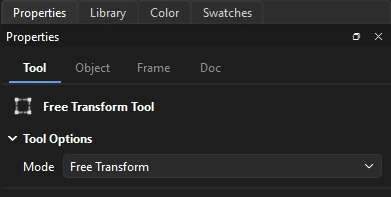

Drawing
Selecting and transforming
Select what you want to change, then move it, copy it, reshape it, or line it up with everything else.
The Selection tool
Press V. The Selection tool is the one you will use most.
| Do this | To |
|---|---|
| Click | Select an object, or one area of merge artwork |
| Shift-click | Add to or remove from the selection |
| Drag on empty stage | Select everything inside a rectangle |
| Drag a selection | Move it; hold Shift to keep to straight lines |
| Alt-drag | Move a copy, leaving the original in place |
| Arrow keys | Nudge one pixel; ten with Shift |
| Double-click | Enter a symbol or group to edit it; on merge artwork, widen the selection |
| Esc | Clear the selection |
(Ctrl+A) and (Ctrl+Shift+A) work too. To bend and reshape merge artwork with this tool, see Reshaping merge artwork.
Subselection
Press A. The Subselection tool edits the points of a path directly. Click a path to show its points, drawn as small hollow squares; a selected point is filled.
- Drag a point, or drag a rectangle to select several and drag them together.
- Drag a handle to change the curve; Alt-drag to move one handle independently of its partner.
- Alt-drag from a corner point to pull out handles, or Alt-click a smooth point to make it a corner.
- Nudge selected points with the arrow keys, and press Delete to remove them.
Lasso tools
The lasso slot (L) holds three ways to select an irregular area. Hold Shift with any of them to add to the selection.
- Lasso
- Draw a loop freehand. Merge artwork is cut along the loop.
- Polygon
- Click corner after corner. Close the shape by clicking the first corner, double-clicking or pressing Enter. Esc cancels.
- Magic Wand
- Selects an area of similar color in a broken-apart bitmap. Threshold (0 to 200) sets how similar a color must be; Smoothing (Pixels, Rough, Normal or Smooth) sets how the edge of the selection is traced.
Free Transform
Press Q. Handles appear around the selection.
| Drag | To |
|---|---|
| A corner or side handle | Scale. Shift keeps the proportions; Alt scales around the transformation point. |
| Just outside a corner | Rotate. Shift rotates in 45° steps. |
| Along an edge between handles | Skew |
| The transformation point | Move the point that scaling and rotation work around. Double-click it to center it again. |
| A corner with Ctrl | Distort a shape freely. Add Shift to taper both sides together. |

In Envelope mode, a mesh of points and handles surrounds the shape, and dragging them warps the artwork inside. Esc cancels a transform in progress.
3D rotation and translation
Movie clips can be turned and moved in 3D, drawn in perspective. The two 3D tools share a slot in the toolbox:
- 3D Rotation (W)
- Drag a movie clip left or right to turn it about its vertical axis, up or down to tip it about its horizontal axis. It turns about its transformation point. Alt-click sets it flat again.
- 3D Translation (G)
- Drag a movie clip up to push it into the stage, down to bring it nearer. A clip further in draws smaller and closer to the vanishing point in the middle of the stage. Move it across the stage with the Selection tool as usual.
The view has a perspective angle of 55°. The 3D turn and depth are keyed on keyframes like any other property, and a classic tween between two keyframes turns and moves the clip smoothly from one to the other. Each drag is a single step to undo.
Transform commands
has exact transforms:
| Command | Shortcut |
|---|---|
| Scale and Rotate... | Ctrl+Alt+S |
| Rotate 90° CW | Ctrl+Shift+9 |
| Rotate 90° CCW | Ctrl+Shift+7 |
| Flip Vertical, Flip Horizontal | |
| Remove Transform | Returns an instance, group or object to its original size and angle |
The Transform panel
(Ctrl+T) scales the selection by a percentage (with Constrain to keep proportions), rotates it by an angle, or skews it. Duplicate and Transform applies the values to a copy, which is a quick way to make a ring of evenly turned copies.
Cut, copy and paste
| Command | Shortcut | Notes |
|---|---|---|
| Cut | Ctrl+X | |
| Copy | Ctrl+C | |
| Paste in Center | Ctrl+V | Pastes in the middle of the view |
| Paste in Place | Ctrl+Shift+V | Pastes at the original position, for example on another frame or layer |
| Duplicate | Ctrl+D | Copies and pastes in one step |
| Clear | Delete | Removes the selection |
Copies go to the system clipboard. You can paste artwork between two Phoenix windows, paste a picture of your artwork into other apps, and paste images and text from other apps into Phoenix.
Arrange and lock
Objects on a layer are stacked. Use to change their order:
| Command | Shortcut |
|---|---|
| Bring to Front | Ctrl+Shift+↑ |
| Bring Forward | Ctrl+↑ |
| Send Backward | Ctrl+↓ |
| Send to Back | Ctrl+Shift+↓ |
| Lock | Ctrl+Alt+L |
| Unlock All | Ctrl+Alt+Shift+L |
When several objects are selected, they move through the stack together. A locked object can't be selected until you unlock it.
Align
(Ctrl+K) lines up the selected objects:
- Align their left edges, centers or right edges, or their tops, middles or bottoms.
- Distribute them so their edges or centers are evenly spaced.
- Match size to make them the same width, height or both.
- Space evenly to put equal gaps between them, across or down.
Check Align to stage to align to the stage instead of to each other, for example to center an object on the stage.
The Info panel
(Ctrl+I) shows the size and position of the selection, the position of the cursor, and the color under the cursor.
Position and size
For exact numbers, use the Position and Size section of the Object tab: X and Y set the position, and W and H the size. Click the chain button to keep the width and height in proportion.
Shape commands
cleans up and reshapes merge artwork and drawing objects:
- Smooth
- Softens curves and removes small bumps. Repeat to smooth further. Also on the Object tab as Smoothen.
- Straighten
- Flattens nearly straight curves into lines. Also on the Object tab.
- Advanced Smooth...
- Ctrl+Alt+Shift+M. Smooths only the corners sharper or blunter than the angles you set (a straight run is 180°), as strongly as you choose.
- Advanced Straighten...
- Ctrl+Alt+Shift+N. Straightens as strongly as you choose. With Recognize shapes, a closed path that reads as a rectangle or an oval becomes a true one.
- Optimize...
- Ctrl+Alt+Shift+C. Reduces the number of points in curves, at a strength you choose.
- Convert Lines to Fills
- Turns strokes into filled shapes, so you can reshape their edges or fill them with a gradient.
- Expand Fill...
- Grows or shrinks (insets) a fill by a distance in pixels.
- Soften Fill Edges...
- Adds a set of fading bands around a fill, outward or inward, for a soft edge.
Distribute to layers
(Ctrl+Shift+D) moves each selected object onto a new layer of its own, ready to animate separately.